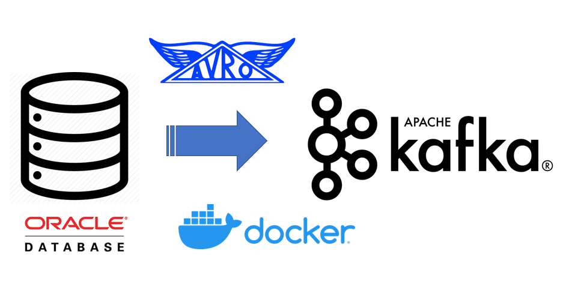
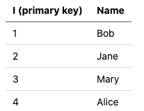
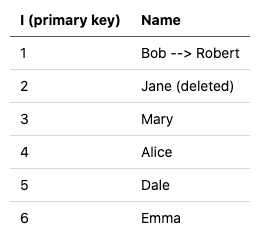
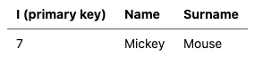

Oracle to Kafka — Playing with Confluent’s new Oracle CDC Source Connector in Docker
Posted

Oracle to Kafka — Playing with Confluent’s new Oracle CDC Source Connector in Docker
It’s really exciting to have a new option for streaming Oracle data into Kafka. With Confluent releasing their “Oracle CDC Source Premium Connector” there’s a new way to capture data that has been added to, updated, or deleted from Oracle RDBMS with Change Data Capture (CDC). Think of this as a low touch way to stream both the Oracle data and schema changes into Kafka and Schema Registry.
I put together some examples so you can play with this entire pipeline in Docker. Docker is an easy-way to run a an end to end pipeline on your machine. I hope this demo gives you a glimpse of how Oracle CDC to Kafka works.

⚠️ Some of these components are paid offerings 💰 for production use. Both the Oracle and Confluent license grant you free licence to play with this stuff as a developer for 30 days (disclaimer: I’m not a lawyer; nor do I play one on TV)
🛠 Code available at https://github.com/saubury/kafka-connect-oracle-cdc
Kafka Connect, CDC— What be this?
Kafka Connect is an open source framework for streaming data between Apache Kafka and other data systems (such as databases). Confluent’s Oracle CDC Source Connector is a plug-in for Kafka Connect, which (surprise) connects Oracle as a source into Kafka as a destination.
This connector uses the Oracle LogMiner interface to query online and archived redo log files. That’s an Oracle specific way to stream both the DML and DDL directly from the redo of the database. This is similar to how the Debezium project reads the Postgres write-ahead log or the MySQL binlog.
Why not just use the Oracle JDBC Source Connector?
Robin Moffatt has written a great article on How to Integrate Your Databases with Apache Kafka which provides a great discussion on the differences between a JDBC connector reading data from a database (such as Oracle) vs a log-based Change Data Capture (CDC) tool to extract changes.
The Oracle JDBC Connector is fine for getting a snapshot of a table. However, to identify changed or deleted rows with a JDBC connector is painful. Let’s just say you’ll quickly fall into a murky world of putting triggers on tables to determine what has changed … and no-one wants to do that.
The Oracle CDC Source Connector on the other hand is essentially listening to the recovery redo segment of the database. This allows for most DML (insert, update, delete) and some DDL (alter table) database events to be captured an Oracle database and produced into into Kafka and the Schema Registry.
Oracle Versions
Worth highlighting that when this blog was written, the connector works with Oracle 11g, 12c and 18c but not Oracle 19c. For this demonstration I’m using Oracle 12c with pluggable databases.
Let’s Play
Clone this repo
git clone [https://github.com/saubury/kafka-connect-oracle-cdc](https://github.com/saubury/kafka-connect-oracle-cdc)
cd kafka-connect-oracle-cdc
Get Oracle CDC Source Connector
Be sure to review the license and download the zip file for the Confluent Oracle CDC Source Connector
Unzip to confluentinc-kafka-connect-oracle-cdc (and remove any trailing version numbers)
unzip ~/Downloads/confluentinc-kafka-connect-oracle-cdc-1.0.3.zip
mv confluentinc-kafka-connect-oracle-cdc-1.0.3 confluentinc-kafka-connect-oracle-cdc
Get Oracle Docker
Credit to Stackoverflow for explaining how to get Oracle working in Docker (well, at least in February 2021)
-
log into https://hub.docker.com/
-
search “oracle database”
-
click on “Oracle Database Enterprise Edition”
-
click on “Proceed to Checkout”
-
fill in your contact info on the left, check two boxes under “Developer Tier” on the right, click on “Get Content”
You should now be able to download an Oracle Docker image
docker login --username YourDockerUserName --password-stdin
<<Enter your password>>
docker pull store/oracle/database-enterprise:12.2.0.1
Docker Startup
You’re all set to startup the platform (which will start Oracle, Kafka, Kafka Connect, Schema registry etc.,)
docker-compose up -d
Setup Oracle Docker
Once the Oracle database is running, we need run a script to perform some setup. This SQL will turn on ARCHIVELOG mode, create some users, and establish permissions
First, ensure the database looks like it’s finished starting up (docker-compose logs -f oracle) and then run the following (for the curious, the SQL script is here )
docker-compose exec oracle /scripts/go_sqlplus.sh /scripts/oracle_setup_docker
Sample Data
This SQL script also creates an EMP table, and adds four employees.
The EMP table
Connector Configuration
Check the OracleCdcSourceConnector source plug-in is available
curl -s -X GET -H 'Content-Type: application/json' http://localhost:8083/connector-plugins | jq '.'
And look for an occurrence of “class”: “io.confluent.connect.oracle.cdc.OracleCdcSourceConnector”
All good — now it’s time to establish the SimpleOracleCDC connector. This configuration will initially snapshot the EMP table, and then listen to all redo activity (DML and DDL) against this table.
curl -s -X POST -H 'Content-Type: application/json' --data @SimpleOracleCDC.json http://localhost:8083/connectors | jq
Check the status of the connector. You may need to wait a minute or so for the status to show up
curl -s -X GET -H 'Content-Type: application/json' http://localhost:8083/connectors/SimpleOracleCDC/status | jq
Check topic
If you have Kafka tools installed locally, you can look at the de-serialised AVRO like this
kafka-avro-console-consumer --bootstrap-server localhost:9092 --topic ORCLCDB.C__MYUSER.EMP --from-beginning
Or if you don’t have the Kafka tools installed, you can launch kafka-avro-console-consumer via a container like (yes; this is all one line)
docker-compose exec kafka-connect kafka-avro-console-consumer --bootstrap-server kafka:29092 --property schema.registry.url="http://schema-registry:8081" --topic ORCLCDB.C__MYUSER.EMP --from-beginning
The (simplified) output of kafka-avro-console-consumer should look something like. Four rows initially from the table are four records in Kafka
{"I":"\u0001","NAME":{"string":"Bob"}}
{"I":"\u0002","NAME":{"string":"Jane"}}
{"I":"\u0003","NAME":{"string":"Mary"}}
{"I":"\u0004","NAME":{"string":"Alice"}}
Schema
Let’s see what schemas we have registered for the EMP table
curl -s -X GET http://localhost:8081/subjects/ORCLCDB.C__MYUSER.EMP-value/versions/1 | jq -r .schema | jq .
Amongst other things, you’ll see version 1 of the schema has been registered like this
"fields": [
{
"name": "I",
"type": {
"type": "bytes"
},
{
"name": "NAME",
"type": [
"string"
]
}
Insert, update and delete some data
Let’s now insert more data, and try some updates and a delete.
Run docker-compose exec oracle /scripts/go_sqlplus.sh followed by this SQL
insert into C##MYUSER.emp (name) values ('Dale');
insert into C##MYUSER.emp (name) values ('Emma');
update C##MYUSER.emp set name = 'Robert' where name = 'Bob';
delete C##MYUSER.emp where name = 'Jane';
commit;
exit
Updated Sample Data
This adds 2 rows to EMP table, updates 1 row, and deletes 1 row.
Updated EMP table
The (simplified) output of kafka-avro-console-consumer should look something like
{"I":"\u0005","NAME":{"string":"Dale"},"op_type":{"string":"I"}}
{"I":"\u0006","NAME":{"string":"Emma"},"op_type":{"string":"I"}}
{"I":"\u0001","NAME":{"string":"Robert"},"op_type":{"string":"U"}}
{"I":"\u0002","NAME":{"string":"Jane"},"op_type":{"string":"D"}
DDL
So far we’ve seen DML applied to a table. Now let’s try some DDL to modify a table.
Run docker-compose exec oracle /scripts/go_sqlplus.sh followed by this SQL
ALTER TABLE C##MYUSER.EMP ADD (SURNAME VARCHAR2(100));
insert into C##MYUSER.emp (name, surname) values ('Mickey', 'Mouse');
commit;
Updated Sample Data
Our new row looks like this (note the new surname column)
DDL applied to EMP table
Schema mutation
Let’s see what schemas we have registered now.
curl -s -X GET http://localhost:8081/subjects/ORCLCDB.C__MYUSER.EMP-value/versions
Will show [1,2] — indicating two versions of the schema are available. We have data registered against version 1 and version 2 of the schema
curl -s -X GET http://localhost:8081/subjects/ORCLCDB.C__MYUSER.EMP-value/versions/2 | jq -r .schema | jq .
Note, schema version 2 has this addition
{
"name": "SURNAME",
"type": [
"null",
"string"
],
"default": null
}
Tear Down
To tear down the containers
docker-compose down
Conclusion
Capturing data from an Oracle database into Kafka is a really common request. Having a Confluent supported CDC Source Connector is a great option to consider when you require a low touch way to stream both the Oracle data and schema changes into Kafka and Schema Registry.
Oh, and Docker is awesome !